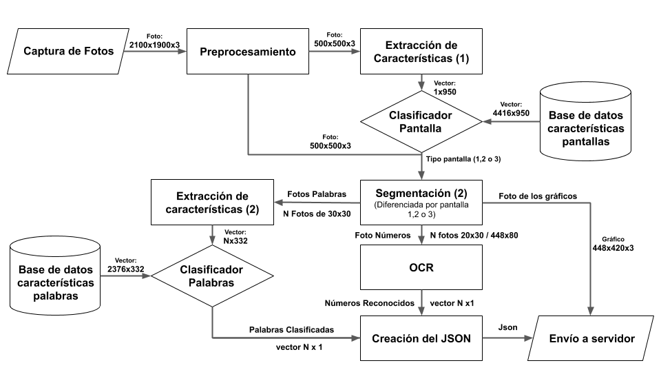
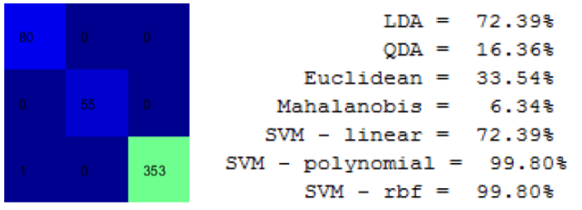
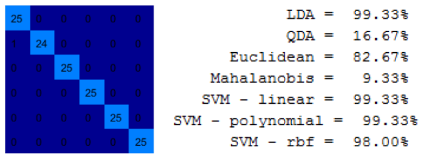
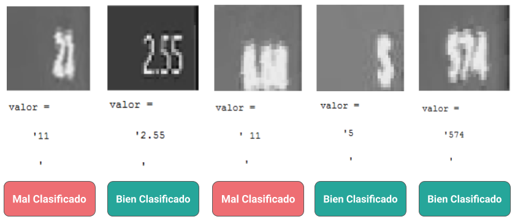
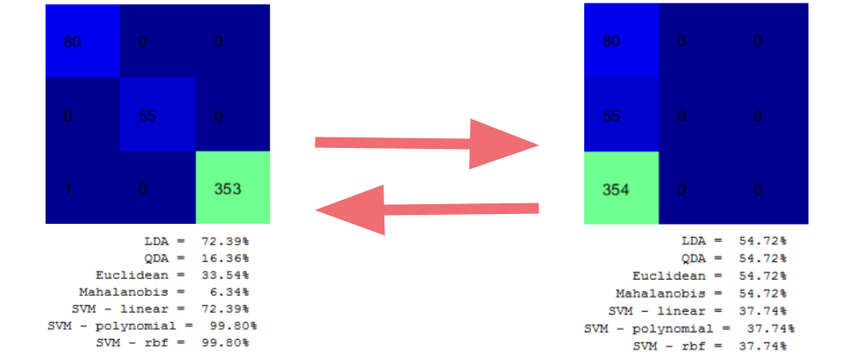
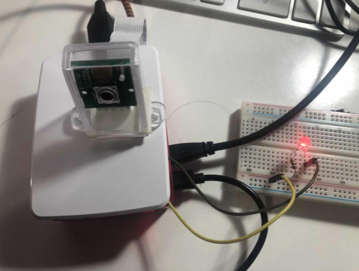
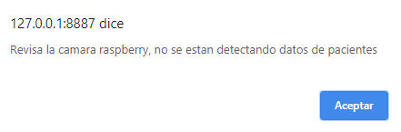

Software Desarrollado
Descripción general
El software que implementamos fue hecho en Octave y Matlab, usando este ultimo para crear los clasificadores. El detalle del softwware se visualiza en el diagrama de software que mostramos a continuación:
 1. Etapa de preprocesamientoEl preprocesamiento consta de aplicar una serie de filtros que incluyen:
- Homogeneizar la iluminación de la imagen
- Transformarla a escala de grises
- Filtro gausseano
- Filtro gradiente
- Transformarla a escala binaria
- Erocionar la imagen
- Rellenar agujeros
- Elegir el area más grande
Luego de aplicar los filtros, buscamos las esquinas y alimentamos la transformada homografía. El resultado de esta
etapa se visualiza en la siguiente imagen:


Aquí se entrena un clasificador, con 809 imagenes de la pantalla A, 552 imagenes de la pantalla B y 3544 imagenes de la pantalla C. Usamos 90% de las imagenes para trainig y el 10% sobrante para testing. Los resultados de las distintas simulaciónes se ven en la siguiente imagen. Dados los resultados, finalmente empleamos el clasificador support vector machinne de radio, ya que logró un desempeño de 99.8%
 3. Etapa de clasificador de palabrasDebido a la cantidad de imagenes solo se desarrollo el clasificador de palabras del modelo A,usando las palabras Rate, FiO2, Mvexp, Ppeak, PEEP y Vtexp. Manejamos un total de 2376 fotografías, usando el 90% para entrenar los modelos y el 10% para su testeo. Debido los resultados obtenidos nos quedamos con el clasificador que usaba support vector machinne polinomial con un desempeño de 99.33%
 4. Etapa de reconocimiento optico de caracteresPara detectar los numeros, se empleo una red neuronal pre-entrenada, a la que se le entregaban imagenes que pasan por un threshold de 220, tomando valor 255 solo si supera dicho limite. Los resultados obtenidos se adjuntan a continuación:
 5. Resultado en servidor 6. Actualización OTAAnteriormente el envío de datos era a través del servidor Servidor web en dropbox: Servidor web que se puede ver aquí:
Servidor
Y de este servidor se sacan los datos que se despliegan en la interacción de usuario de la presente pagina web. Todos estos
cambios se notifican gracias a la actualización OTA:
- Método de actualización remota de firmware/software.
- Uso de la plataforma Upswift.
- Permite registro de dispositivo con dirección IP.
Avances respecto a la entrega anterior
1. Clasificador de pantallas
En la entrega anterior, señalamos que apesar de tener buenos resultados en este clasificador (Desempeño de 99.8%), el tiempo que demoraba en efectuar dicha clasificación era demasiado, puesto que demoraba 19.1 segundos en clasificar solo una imagen, por lo que se señaló que lo mejorariamos trabajando con imagenes de menor tamaño,especificamente de 50x50 aplacando re-size a las imagenes existentes y traspasandolas a escala rgb.
Sin embargo, a pesar de mejorar la velocidad a 0.5 segundos, el desempeño bajo considerablemente, razón por la que decidimos mantener el clasificador anterior. Creemos que esto se debe a que al reducir el tamaño de la imagen, los pixeles se comprimen y se pierden las diferencias entre las tablas de las imagenes que es la unica diferencia relevante entre los modos de pantallas.
2. Desarrollo de la interfaz de usuario
Para mejorar la experiencia de usuario y facilitar el monitoreo de los pacientes desarrollamos una interfaz de
usuario contenida en esta pagina web. Para desarrollarla usamos los recursos html5, javaScript y
CSS a través del editor de texto Visual Studio Code. Para el manejo de bases de datos, llamesé
archivos .json e imagenes de ventiladores, implementando el uso de jQuery con la técnica Ajax, logrando
aumentar la usabilidad de la página y evitar la información redundante.
3. Modificación del sistema de alerta
Como el objetivo del proyecto es que un médico pueda supervisar al paciente desde donde sea, consideramos que el uso de solo el led era limitado, razón por la que modificamos el codigo, a modo de que siempre se genere un json, pero en caso de no detectar la pantalla, las palabras en esta o los valores que toman las palabras, este json este vacio. De este modo el led se enciende si el json es una cadena vacia.
Esta modificación se hizo para lograr que si el medico actualiza los datos del paciente y existe algun error con la camara, se active un pop-up de alerta, que señalé que existe un error en la captura de datos, de esta forma el médico podrá ir a arreglarlo o alertar a alguien para que verifique la posicion de la camara. A continuación, se muestra como es esta alerta:
El funcionamiento de esta se mostrará a continuación, en la pestaña del menú: Interfaz de usuario